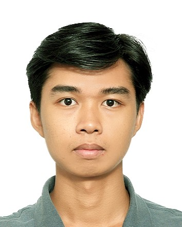
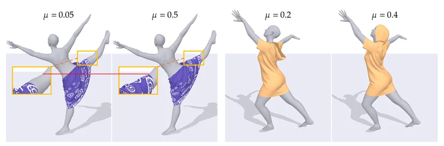
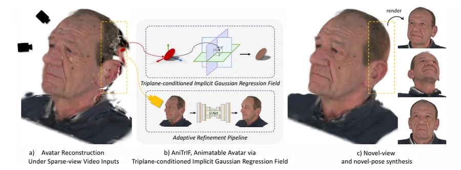
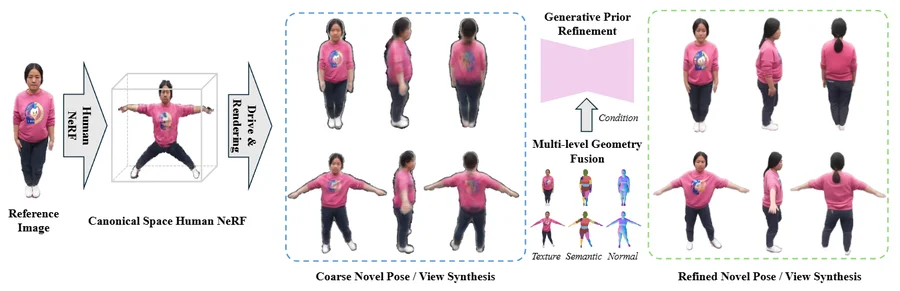
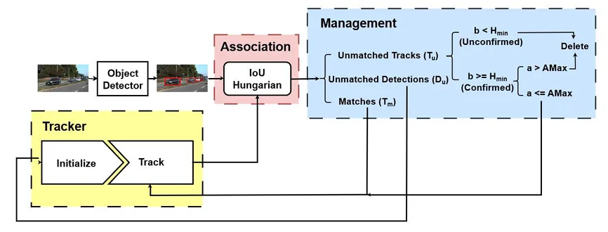

Thanh-Nguyen Truong 張青原
M.S., Electrical Engineering and Computer Science
National Yang Ming Chiao Tung University (NYCU) · Hsinchu, Taiwan
About
I'm a recent M.S. graduate of the Electrical Engineering and Computer Science International Graduate Program at National Yang Ming Chiao Tung University (NYCU), Hsinchu, Taiwan, where I worked in the ACM Lab under Prof. Ching-Chun Huang. Before NYCU, I earned a B.Eng. in Automotive Engineering Technology at Ho Chi Minh City University of Technology and Engineering (HCMUTE), Vietnam.
News
- Oct 2026
- Two papers accepted at WACV 2027, including my thesis work on explicit frictional contact in neural garment simulation.
- Sep 2026
- Received my M.S. degree from NYCU.
- Oct 2025
- Blur2Sharp accepted at WACV 2026.
Publications
-

Explicit Frictional Contact Modeling in Neural Garment Simulation
Thanh-Nguyen Truong, Vu-Hoang Tran, Ching-Chun Huang
Accepted at WACV 2027 · Project Page
-

AniTrIF: Animatable Head Avatar Reconstruction from Sparse Views via Triplane-conditioned Implicit Gaussian Regression Field
Huu-Phu Do, I-Hsuan Lo, Thanh-Nguyen Truong, Duy-Khanh Ngo, Ching-Chun Huang
Accepted at WACV 2027
-

Blur2Sharp: Human Novel Pose and View Synthesis with Generative Prior Refinement
Chia-Hern Lai, I-Hsuan Lo, Yen-Ku Yeh, Thanh-Nguyen Truong, Ching-Chun Huang
WACV 2026, pp. 3350–3359 · Paper
-

A Reliable Feature-Based Framework for Vehicle Tracking in Advanced Driver Assistance Systems
Ngoc-Quan Ha-Phan, Thanh-Nguyen Truong, Vu-Hoang Tran, Ching-Chun Huang
APSIPA ASC 2023, pp. 741–747 · Paper
Experience
- Graduate Researcher, ACM Lab, NYCUSep 2024 – Aug 2026
- Teaching Assistant, NYCUSep 2024 – Jan 2025
- Research Intern, Taiwan Experience Education Program (TEEP), NYCUOct 2023 – Apr 2024
- Embedded Software Intern, Renesas Design VietnamOct 2022 – Apr 2023
Education
- M.S., Electrical Engineering and Computer Science International Graduate Program2024 – 2026
National Yang Ming Chiao Tung University (NYCU), Hsinchu, Taiwan - B.Eng., Automotive Engineering Technology2019 – 2023
Ho Chi Minh City University of Technology and Engineering (HCMUTE), Vietnam